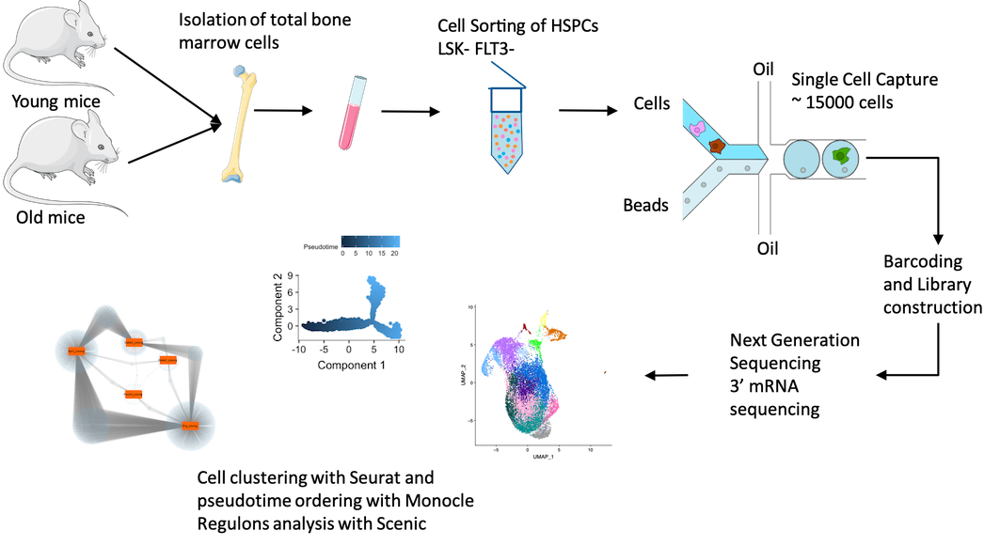
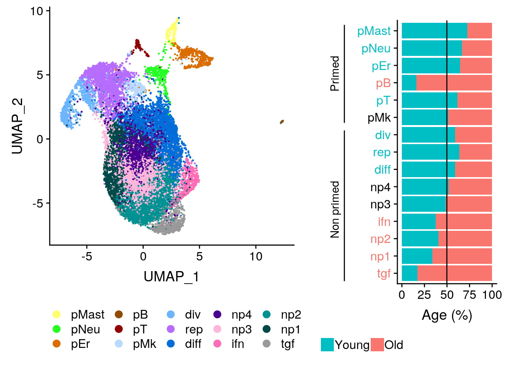
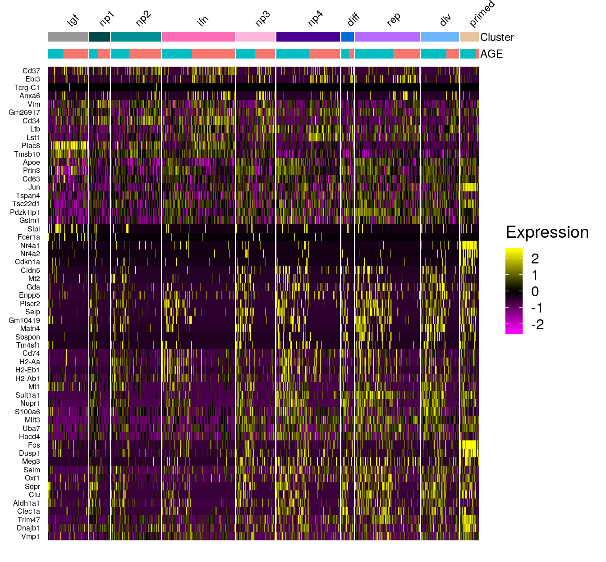
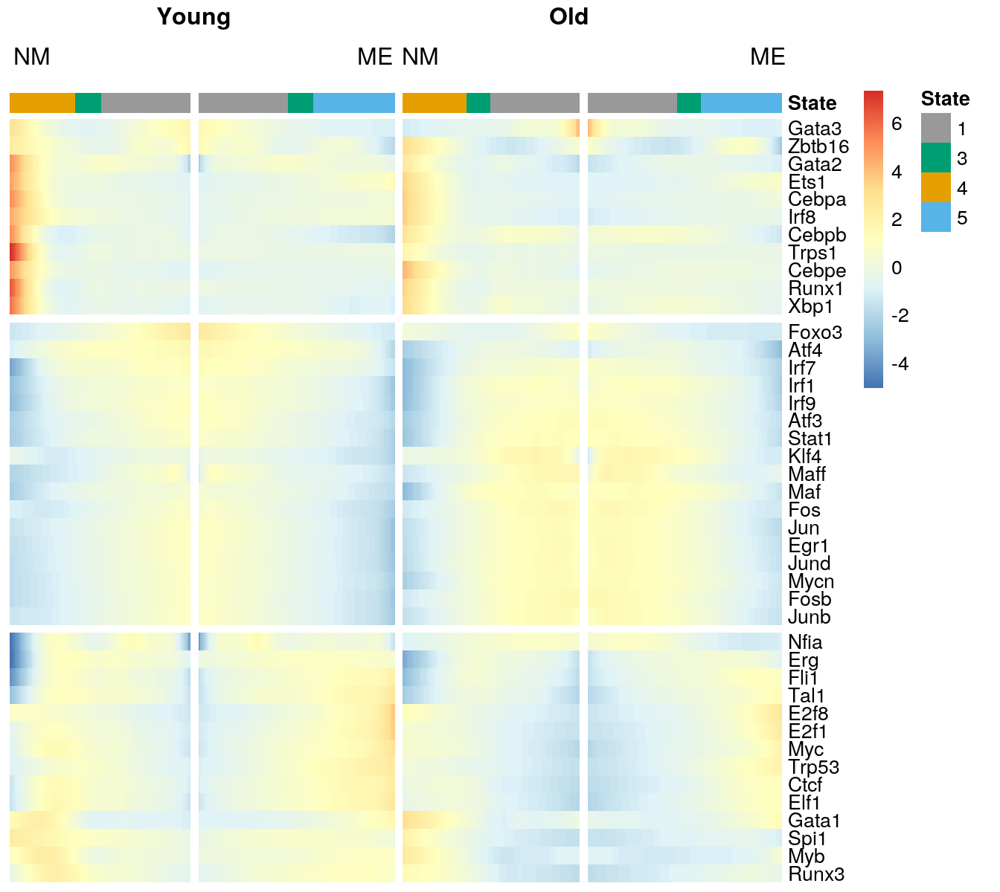

Single cell RNA-seq reveal alterations of transcriptional programs in HSCs upon aging
The hematopoietic stem cell aging
L. Hérault 1 2, 
leonard.herault@inserm.fr
A. Mazuel2 M. Poplineau2 N. Platet2 E. Remy1 E. Duprez2
1 I2M; Institut de Mathématiques de Marseille
2 CRCM; Centre de Recherche en Cancérologie de Marseille
Introduction
Hematopoietic stem cells (HSCs) represent a rare population of cells residing in the Bone Marrow (BM) at the top of hematopoietic hierarchy. A critical balance is maintained between self-renewal and lineage differentiation of HSCs to maintain hematopoietic homeostasis. With aging, this balance is altered with an increase of long term HSCs self-renewal and a myeloid biased differentiation, which favors the appearance of myeloid leukemias and anemias. My thesis project aims to understand molecular mechanisms that cause this aged-related disequilibrium in the mouse.
Aging of mouse HSC pool
Objectives
- Characterize aging of early hematopoiesis in term of subpopulation and intrinsec changes of hematopoietic stem and progenitor cells (HSPCs).
- Analyze the early differentiation process in young and old HSPCs to find its main actors (transcription factors).
- Build a logical regulatory graph of transcription factors to modelize HSC aging.
Methods
We generated single cell RNA-seq (scRNA-seq) data from pools of young and old HSPCs, isolated from mouse BMs. We used Seurat (Stuart et al. 2019) and Monocle (Qiu et al. 2017) R packages to repectively cluster the cells and order them along their differenciation process. We also analyse regulon activities with pyScenic (Aibar et al. 2017) to identify transcription factor activity changes upon aging.
 Overview of the analysis
Results
Clustering resulted in 15 clusters divided in lineage primed and non-primed clusters. With aging an accumulation of HSCs to the more immature clusters is observed:

Aging markers were found mainly in non-primed clusters:

HSPC differentiation trajectory shows a branching between a myeloid and a megakaryocyte-erythroid fate conserved with aging:
Regulons activities fit the differenciation process. However these transcription programs are strongly altered upon aging:

Old HSCs cycle less than young ones. Both asymmetric and symmetric divisions are mainly distributed after the branching in the old cell trajectory contrary to the young one where a consistent pool of dividing cells is located just before the branching:
Perspectives
We plan to build a boolean model centered on transcription factors controlling the molecular mechanisms that cause the HSC aging. To this aim, we will complete and specify existing models in the context of aging, by integrating our scRNA-seq analysis results.
Modeling strategy
References
Aibar, Sara, Carmen Bravo González-Blas, Thomas Moerman, Hana Imrichova, Gert Hulselmans, Florian Rambow, Jean-Christophe Marine, et al. 2017. “SCENIC: Single-Cell Regulatory Network Inference and Clustering.” Nature Methods 14 (11). Nature Publishing Group: 1083.
Qiu, Xiaojie, Qi Mao, Ying Tang, Li Wang, Raghav Chawla, Hannah A Pliner, and Cole Trapnell. 2017. “Reversed Graph Embedding Resolves Complex Single-Cell Trajectories.” Nature Methods 14 (10). Nature Publishing Group: 979.
Stuart, Tim, Andrew Butler, Paul Hoffman, Christoph Hafemeister, Efthymia Papalexi, William M Mauck III, Yuhan Hao, Marlon Stoeckius, Peter Smibert, and Rahul Satija. 2019. “Comprehensive Integration of Single-Cell Data.” Cell. Elsevier.